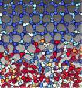

Séminaires/Colloquium 2019¶
« A maggot becomes a fly « : from cell dynamics to epithelial tissue patterning¶

04 février 2020 de 14h00 à 15h00
COLLOQUIUM Centre Blaise Pascal-Laboratory of Biology and Modeling of the Cell
Salle des Thèses, ENS Lyon, France
François GRANER (Complex System and Matter, CNRS & Univ. de Paris-Diderot)
Organisateurs :
Daniel Jost (CNRS/Laboratory of Biology and Modeling of the Cell, de l’ENS de Lyon)
Cerasela Calugaru (Centre Blaise Pascal, ENS de Lyon, France)
Abstract :
Development, homeostasis and regeneration of tissues result from a complex combination of genetics and mechanics. Our model system is the Drosophila metamorphosis, during which the fly strikingly changes, within a few days, from a rather simple maggot shape to a refined adult shape with wings, legs, antennas, waist, neck, and compound eye.
Tremendous progress in experimental techniques now provide access to quantitative cell-scale information within tissues, whether on the cell shapes and shape changes, on cell-cell interaction forces, and on the genes being expressed. To uncover mechanisms governing tissue development, a rigorous multiscale approach is required.
The biologist and physicist jointly address several challenges : linking cell-cell interactions with tissue structure; linking cell-level dynamical processes such as cell divisions, deaths and rearrangements, with tissue-level morphogenetical changes; and most important, understanding the interplay between genetics and mechanics, which both contribute to regulate the morphogenesis.
Chemical equilibrium in the Earth’s core¶
03 juillet 2019 de 11h00 à 12h00
COLLOQUIUM Centre Blaise Pascal-Laboratoire de Géologie
Amphi L, ENS Lyon, France
Dario ALFE (Department of Earth Sciences and Department of Physics and Astronomy, and London Centre for Nanotechnology, University College London)
Organisateurs :
Razvan Caracas (CNRS/Laboratoire de Géologie de l’ENS de Lyon)
Cerasela Calugaru (Centre Blaise Pascal, ENS de Lyon, France)
Abstract :
The core of the Earth is a source of thermal energy for the mantle, helping to drive convection, plate tectonics and volcanism. It is mainly formed by iron, but is also contains light impurities. The exact chemical inventory of the core is unknown, but it is believed that oxygen may be present in relatively large quantities, as it is a major element in the mantle. Freezing of the inner core causes oxygen to be released in the liquid, which is thought to be the main form of energy driving core convection at the present day, responsible for the generation of the magnetic field. One of the fundamental questions is therefore how oxygen entered the core in the first place. Using first principles calculations of chemical potentials we put contraints on the equilibrium concentrations of oxygen between liquid iron and a liquid silicate mixture, representative of long lived magma ocean (MO) at the base of the mantle. We show that the presence of a large fraction of oxygen in the core can be explained by a relatively large thermodynamic advantage of partitioning from the MO into the liquid core. We also computed chemical potentials in solid ferropericlase, thought to be one of the main constituents of the Earth’s mantle, and found that the current oxygen concentration in the core is lower than its equilibrium concentration, suggesting that the mantle may be continually pumping oxygen into the core, even at the present day. This has important consequences for our understanding of convection in the core, supporting the idea of the presence of a stratified, oxygen rich, layer at the top of the core, which may have been observed in the seismological record.
Machine learning in atomistic simulations: from reaction pathways to phase diagrams¶
05 april 2019 à 9h00
COLLOQUIUM Centre Blaise Pascal - Session extraordinaire dans le cadre du
E-CAM Extended Software Development Workshop : Topics in Classical MD
Lieu : Salle 1 place de l’École, ENS Lyon, France
Christoph DELLAGO, (Faculty of Physics, University of Vienna)
Abstract :
Atomistic computer simulations of processes occurring in condensed matter systems are challenging for several distinct but related reasons. For large systems, the accurate calculation of energies and forces needed in molecular dynamics simulations may be computationally demanding, particularly if electronic structure calculations are used for this purpose. Other difficulties arising in the dynamical simulation of condensed matter processes consist in detecting local structures characteristic for stable or metastable phases and in identifying important degrees of freedom that capture the essential physics of the process under study. In this talk, I will discuss how these problems can be addressed using machine learning approaches. I particular, I will focus on a computational study of water and ice based on a high-dimensional neural network potential trained with ab initio reference data. We have shown that Waals interactions are crucial for the formation of water’s density maximum and its negative volume of melting. Our simulations have also revealed that nuclear quantum effects play an important role in modulating the thermodynamics stabilities of different phases of water.
Morawietz, A. Singraber, C. Dellago, and J. Behler, “How Van der Waals interactions determine the unique properties of water“, Proc. Natl. Acad. Sci. USA 113, 8368-8373 (2016).
Cheng, E. A. Engel, J. Behler, C. Dellago, and M. Ceriotti, “Ab initio thermodynamics of liquid and solid water”, Proc. Natl. Acad. Sci. USA 116, 1110 (2019).
Fast neural solvers¶
04 mars 2019 de 11h00 à 12h00
COLLOQUIUM Centre Blaise Pascal-Laboratoire de Physique
Amphi. Schrödinger, ENS Lyon, France
Patrick PEREZ, (Valeo AI)
Organisateurs :
Corentin Herbert (Laboratoire de Physique, ENS de Lyon)
Cerasela Calugaru (Centre Blaise Pascal, ENS de Lyon, France)
Abstract :
Modern artificial neural networks dominate a number of classic machine learning tasks in a wide range of application domains. What is probably less known is that they also offer new ways to attack certain optimization problems, such as inverse problems arising in physics or image processing. While a variety of powerful iterative solvers usually exist for such problems, deep learning may offer an appealing alternative: With or without supervision, neural networks can be trained to produce approximate solutions, possibly of lower quality, but orders of magnitude faster and with no need for initialization. We shall discuss different ways to design and train such fast neural solvers, with examples from computer vision and graphics.